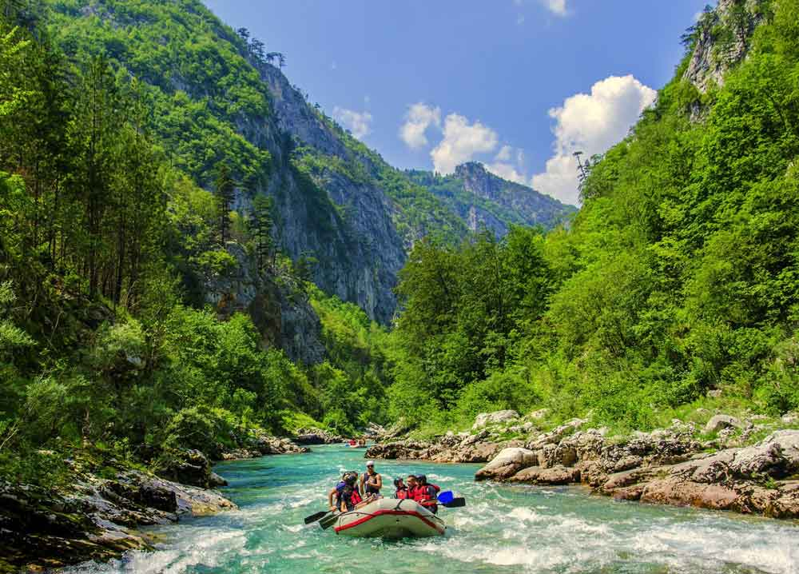
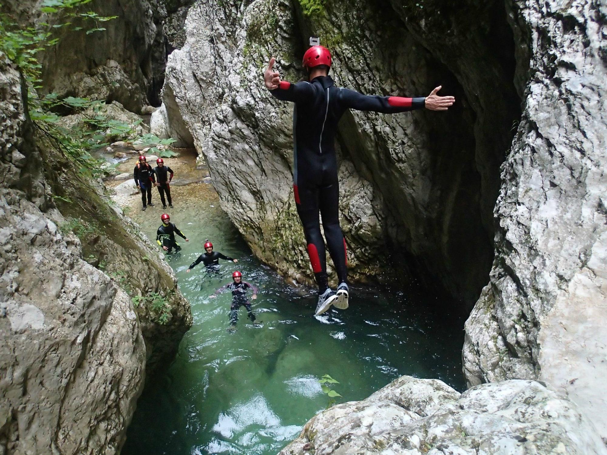
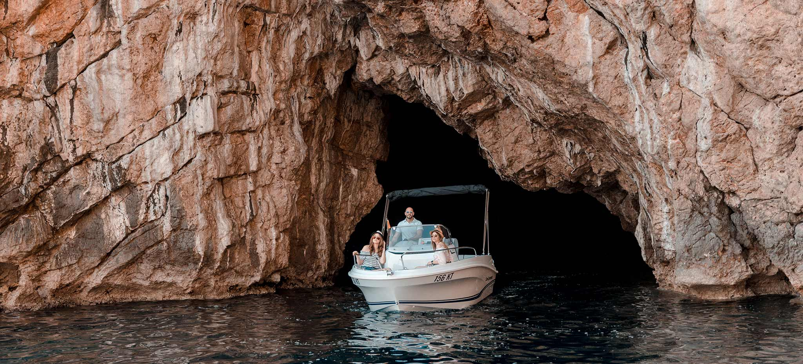

Water Activities

Kayaking on Skadar Lake
This tour is escape into peaceful area with beautiful nature and diverse birdlife. You have a chance to see small fishing villages, floating water lilies and views of surrounding mountains.

Rafting on Tara River
The Tara River, often called the “Tear of Europe,” is famous for its crystal-clear waters and breathtaking scenery. If you’re looking for an adrenaline boost, you should definitely try a rafting tour through this stunning, untouched natural environment.

Nevidio Canyoning
Known as one of the last discovered canyons in Europe, Nevidio offers a mix of narrow passages, waterfalls, and natural pools hidden deep within untouched nature. As you move through it—you’ll experience an unforgettable raw beauty.

Blue Cave
Famous for its glowing turquoise-blue water, Blue Cave creates a magical atmosphere when sunlight reflects through the sea entrance. Visitors can enter the cave by boat and swim in its crystal-clear waters, making it a truly unforgettable experience.